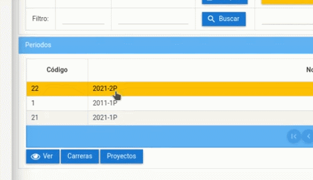
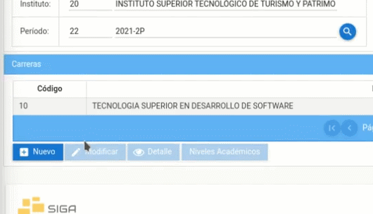
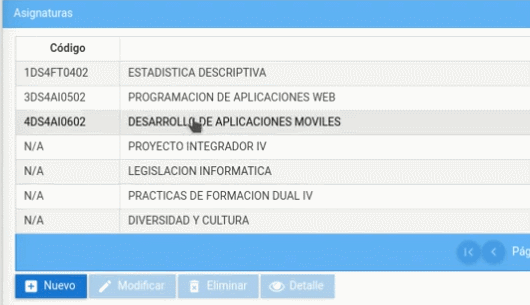
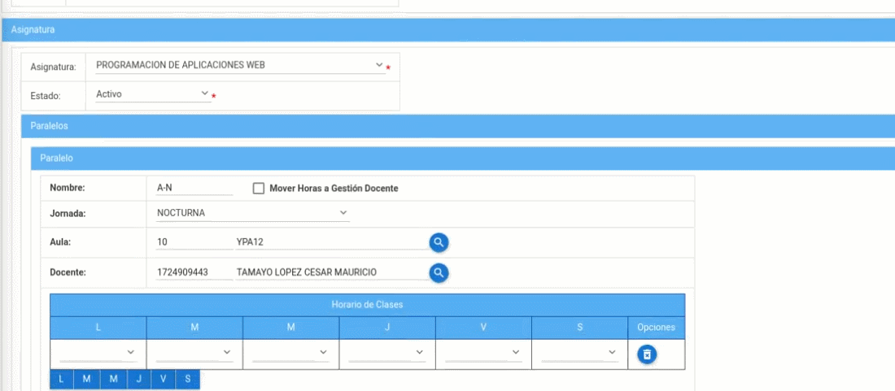

Configurar Horarios
Configurar horarios sirve para que se puedan generar las asistencias y el ingreso de notas para la materia que se requiera.
Presione Click Aquí para ver Video Demostrativo.
Para ello realizaremos los siguientes pasos.
- Diríjase al menú de módulos y dar click en el Módulo "Matrícula".

- Luego presione click en el menú "Instituto", después dar click en sub menú "Periodos".

- Seleccione el periodo que desea modificar, a continuación presione el botón "Carreras". 
- Seleccione la carrera que desea modificar y luego presione el botón "Niveles Académicos". 
- Seleccione el nivel académico en el que se encuentra la asignatura que desea configurar y presione el botón "Asignaturas".

- Selecciones la asingatura a configurar, posteriormente presione el botón "Modificar". 
- Se podrá visualizar un calendario y los paralelos de la asignatura seleccionada, confirme que seleccionó la opción correcta.

- Ubíquese en el paralelo que usted desea configurar y en la tabla "Horario de clases" puede realizar la configuracion por dias y horas que necesite modificar. 
- Para que aparezca un nuevo menú presiona el botón de la sigla del día de la semana y seleeciona el horario que necesite.

- Realice los mismo pasos para todos los dias de la semana.
- Luego de terminar de configurar los horarios presione el botón "Guardar" y aparecerá un mensaje diciendo "Proceso realizado con éxito".